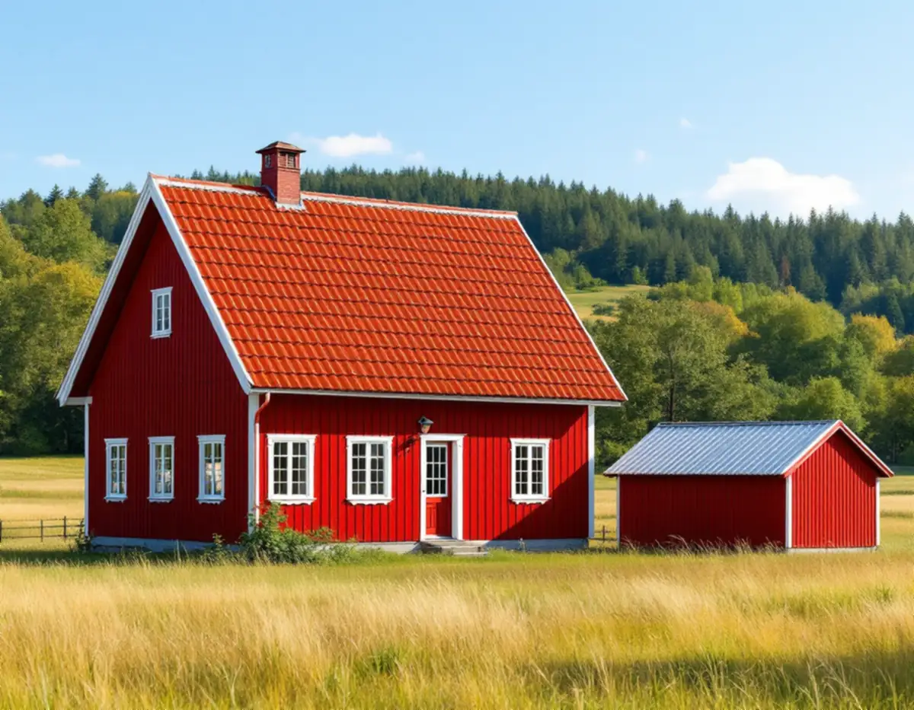
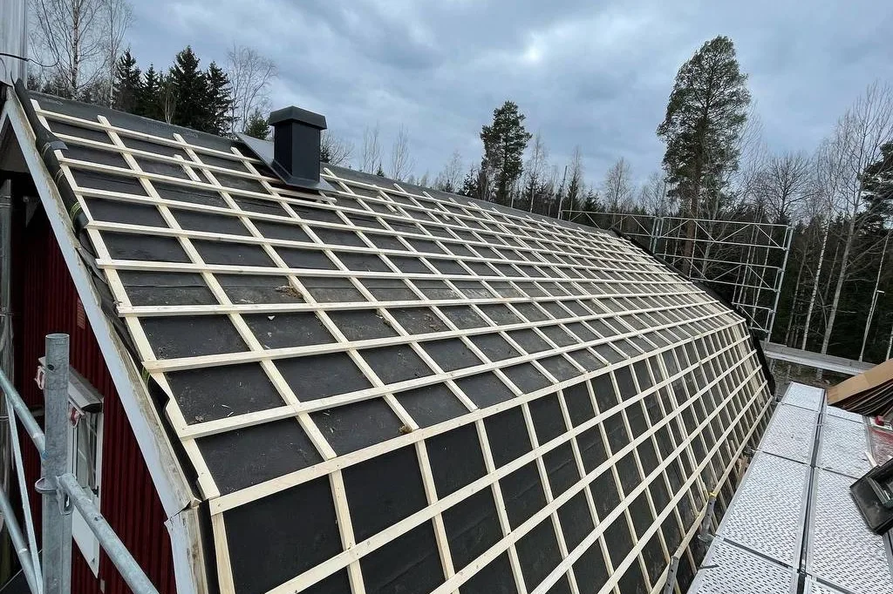

Platsbesök
Vi bedömer tak, takstolar och vind och noterar material, färg och takvinkel.
Huddinge rymmer allt från gårdar och torp på landsbygden till fritidshusområden från 1950–80-talet och tätt bebyggda villakvarter. Vid ett takbyte här styr kommunens regler om samma material och samma färg, och om det nya taket blir tyngre än det gamla. Geal Entreprenad AB byter tak i hela Huddinge och lämnar ett skriftligt kostnadsförslag efter ett gratis platsbesök.

Huddinge kommun räknar byte av kulör, fasadmaterial och taktäckningsmaterial som en fasadändring. På sidan Ändra fasad eller tak skriver kommunen att du inte behöver bygglov för att byta tak om du byter befintligt material till samma sorts material med samma färg. En- och tvåbostadshus kan också ändra utseende utan lov, så länge byggnaden eller området inte är kulturhistoriskt värdefullt.
Lov krävs däremot om huset eller området är kulturhistoriskt värdefullt, och ingenting blir lovfritt om detaljplanen säger att bygglov behövs. Kommunen understryker att lagens krav gäller även utan lov: ändringen ska utföras varsamt och byggnaden ska passa in i omgivningen. Den som vill ha ett skriftligt besked kan söka frivilligt lov, som handläggs som en vanlig ansökan.
Söker du lov för ett nytt takmaterial vill kommunen ha en situationsplan, där en gratis tomtkarta kan användas för att markera byggnaden, och en fasadritning. Vilka miljöer kulturmiljöprogrammet pekar ut beskrivs under takrenovering i Huddinge.

Även när bygglov inte behövs kan ett takbyte kräva en anmälan. Kommunen skriver att du behöver skicka in en anmälan och få startbesked om ändringen innebär att byggnadens bärande delar påverkas väsentligt. Samma sak gäller en solenergianläggning som påverkar den bärande konstruktionen.
Det blir aktuellt när ett lätt tak ersätts med ett tyngre, till exempel när plåt eller papp byts mot betong- eller tegelpannor, eller när solpaneler ska ligga ovanpå de nya pannorna. Takstolarna dimensionerades för det tak som lades från början. Vi tittar på takstolarnas dimensioner och skick vid besöket, och vid ett byte till ett tyngre tak behöver en konstruktör bedöma lasten innan något beställs.
Boverket beskriver att snölasten på ett tak påverkas av takets form och av förhållandena på platsen, bland annat snöras från närliggande tak, snödrift och upprepad upptining och frysning. På en kuperad skogstomt blir snön gärna liggande på ett skuggat takfall. Snörasskydd och takstege ses över i samma omgång, se taksäkerhet och snörasskydd.
Kulturmiljöprogrammet beskriver fritidshusområdena från 1950–80-talet som sammanhållna miljöer med en planerad gatustruktur. Stugorna är monteringsfärdiga fritidshus i ett plan med liggande fjällpanel och sadeltak, placerade en bit upp på tomten i kuperad terräng med blandskog.
Programmets råd är att fasadmaterial, volym och takvinkel bör värnas. Ett takbyte är därför inte rätt tillfälle att höja taket eller ändra lutningen, även om stugan har blivit ett åretruntboende. En takkupa räknas som en tillbyggnad, och kommunen skriver att alla takkupor, oavsett om de kräver lov, ska ha god gestaltning och passa till byggnaden och området.
För de äldre sportstugeområdena från 1920–50-talet betonar programmet att stugorna bör behålla små volymer och att tillägg ska vara läsbara. Där är ofta det enklaste taket det rätta: samma lutning, samma takfot och ett material som passar stugans skala.
Programmets råd för landsbygden utgår från en äldre byggnadstradition med träfasad och sadeltak eller brutna sadeltak täckta med tegel. Som exempel visas en torpmiljö vid Sundby gård, en parstuga med röda fasader och tegeltäckt sadeltak, och huvudbyggnaden på Balingsta med brutet sadeltak täckt med tegel.
Enligt programmet är tegeltäckta tak det vanligaste på landsbygden, men vass, plåt och sedum kan vara aktuella i vissa miljöer. Råden gäller hela landsbygden, även utanför de utpekade kulturmiljöområdena, och programmet påminner om att all bebyggelse omfattas av varsamhetskraven i plan- och bygglagen.
Ska solceller upp efter takbytet krävs bygglov enligt kommunen bland annat om fastigheten ligger inom detaljplan i eller i anslutning till ett riksintresse för totalförsvaret, eller om byggnaden eller miljön har kulturvärden. Mer om paneler finns under solceller på taket.
Vi bedömer tak, takstolar och vind och noterar material, färg och takvinkel.
Detaljplan och kulturmiljöprogram kontrolleras, och vi ser om bytet kan kräva anmälan.
Samma material och färg, eller ett annat material med lov och lastbedömning.
Rivning, underlag, ytskikt, plåt och ställning redovisas var för sig.
Gammalt tak rivs, underlaget ses över och nytt tak läggs, och huset hålls tätt varje kväll.
Vi går igenom taket, avvattningen och taksäkerheten med dig.
Skatteverket räknar byte och reparation av takpannor, plåttak, hängrännor och stuprör på ett småhus som rotarbete, och även att sätta upp och ta ner byggnadsställningar och byggstäda efteråt. Avdraget är 30 procent av arbetskostnaden, högst 50 000 kr per person och år och högst 75 000 kr tillsammans med rutavdrag. Material, resor och bortforsling räknas inte.
Du behöver äga huset medan arbetet pågår och använda det som bostad. Geal drar av ROT direkt på fakturan.
Takets yta och lutning, om samma material läggs igen eller ett tyngre material väljs, om takstolarna behöver förstärkas, mängden plåtarbete, hur ställningen kan stå på en sluttande tomt och om flera byggnader på en gård ska få nytt tak. Läs mer i vad kostar ett takbyte. Efter platsbesöket får du ett skriftligt kostnadsförslag.
Byte av tegel-, betong- och plåttak.
Takbyte →Takbyte, takbesiktning och plåtarbeten.
Takläggare i Huddinge →Stuvsta, Snättringe och Skogås.
Takrenovering i Huddinge →Grannar, tomtgräns och lovärendet.
Byggföretag i Huddinge →Egnahem, grupphus och 70-talsvillor.
Fönsterbyte i Huddinge →Grupphus, egnahem och stugor.
Köksrenovering i Huddinge →Rännor, dagvatten och brutna tak.
Plåtslagare i Huddinge →Egnahem, grupphus och permanentade stugor.
Badrumsrenovering i Huddinge →Villor, grupphus och fritidshus i Huddinge.
Fasadrenovering i Huddinge →Grupphus, radhus och kedjehus i Huddinge.
Golvläggare i Huddinge →Fasad, fönster och rum i Huddinge.
Målare i Huddinge →Altaner, förråd och gäststugor.
Snickare i Huddinge →Råd för tre epoker av småhus.
Tillbyggnad i Huddinge →